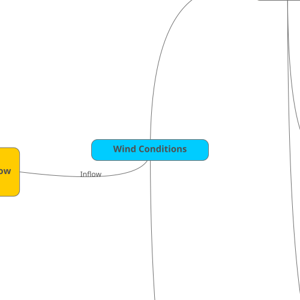

Browsers are
difficult
Please wait, loading your map...

Inflow
Meteorological effects
Inputs to microscale
Meteorological events
Site effects
Surface fluxes
Background ABL turbulent structure
Top b.c.
Horizontal and vertical gradients
Climate effects
Inputs to mesoscale
Climatic events
Wind Conditions
Multi-Scale
Atmospheric Flow
Modeling
Microscale model
(Turbulence)
Surface-layer model
(MOST)
Roughness (z0)
Surface temperature
Stability (z/L)
Heat flux
Sensible
Latent
Atmospheric boundary-
layer model (ABL)
Thermal stratification
Unstable (convective)
Neutral
Stable
Turbulence
RANS
URANS
LES
Synthetic
Cell perturbation
Free atmosphere
Capping inversion
Boundary-layer height
Surface geostrophic
wind (uniform forcing)
Coriolis
fc
Site Heterogeneity
Complex terrain
Flow separation and
recirculation
Gravity waves
Gap flow
Hydraulic Jump
Upstream blocking
(stable)
Katabatic/anabatic
(thermal) flow in
sloping terrain
Valley flows (thermal or
synoptic)
Digital elevation model
Roughness changes
Forest canopy
Canopy model
Aerial lidar scans
Land-use maps
Clearcuts
Shelterbelts
Forest edge
Canopy boundary-layer
(equilibrium)
Equivalent roughness
Tree growth
Obstacles (build-up
environment)
Urban canopy
Street canyon
Isolated building
Flow around bluff-body
Mesoscale model
(Weather)
Mesoscale Forcing
Pressure gradient
(Geostrophic wind)
Advection (momentum,
potential temperature)
Generalized Wind
(WAsP LIB)
Virtual met mast
Land-surface model
PBL scheme (ABL
model)
Meteorological
characteristics
Coastal effects (land-
sea transition)
Topographic effects
(channeling, ridges, etc)
Thermal effects (land/
sea breeze)
Low-level jet
Cold pool
Ramp (large wind speed
change)
Large direction change
Global (Climate)
Global forcing
Global model
(Reanalysis)
Land-cover
Time-dependency (e.g.
seasonal changes in
vegetation, tree
growth, etc)
Terrain
Digital elevation model
Climate characteristics
Climate Change
(decadal variability)
Scenarios
Interannual variability
intended Use
Wind Resource and
Energy Yiled
Assessment (IEC
61400-15-1)
Wind Resource
(annual wind speed
distribution)
Annual Average Wind
Speed at hub-height
(V_ave)
Weibull Distribution
(C,k)
Anual Energy
Production (AEP)
Gross Annual Energy
Production
Median (P50)
Prediction Bias
Post-construction
analysis
Energy Losses
Availability
Electrical
Wake effect
Internal (array
efficiency)
External
Future
Curtailment
Turbine performance
Environmental
Uncertainty
(σ_AEP, P90)
Plant Performance
Project evaluation
period variability
Horizontal
extrapolation
Vertical extrapolation
Historical wind resource
Measurement
Site Suitability (IEC
61400-15-2)
Extreme wind speed
(V50, Vref)
Mean flow inclination
angle
Turbulence intensity
Mean
Standard deviation
Averaged at 15 m/s
Effective (wake-
induced) turbulence
Sector management
Extreme turbulence
intensity
Mean wind shear
Numerical Site
Calibration (IEC 61400
12-4)
Flow Correction Factors
(FCF)
Multi-Scale Wind
Farm Flow
Modeling ("Wakes"
mind map)
Microscale model
(interaction
effects)
Rotor model
Turbine performance
Wake model
Internal wake effects
Wind farm blockage
Wind farm control
Mesoscale model
(external wake
effects)
Wind farm
parameterization
Farm-farm effects
×
Created using
MindMup.com